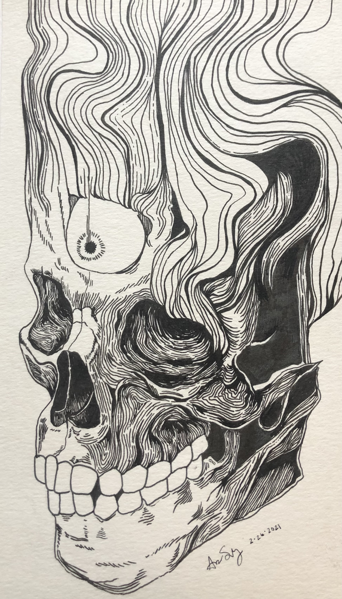
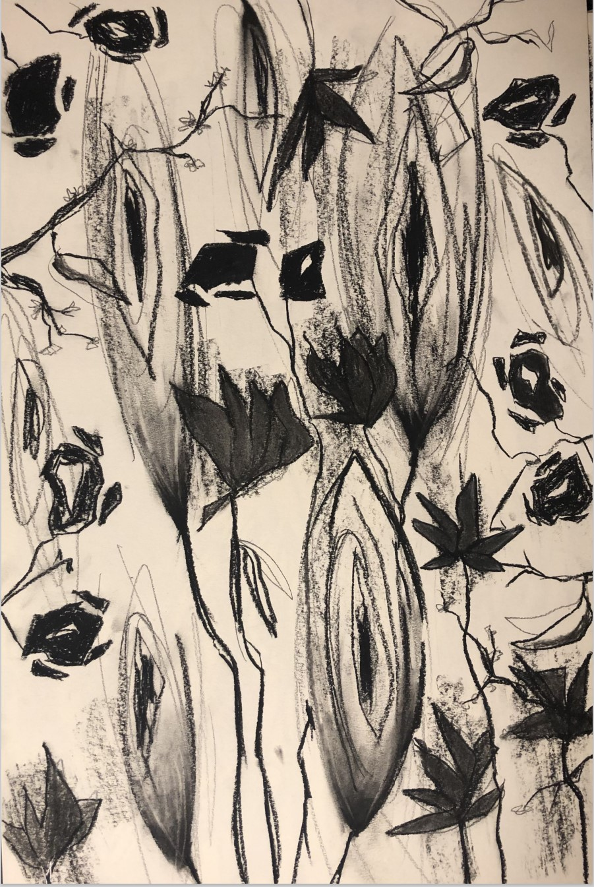
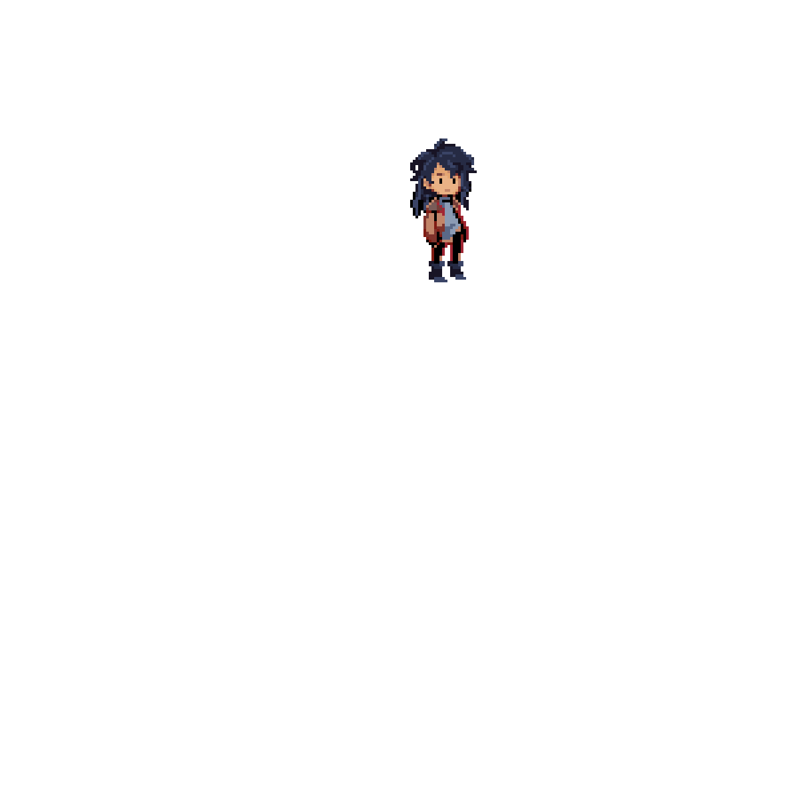

Peeled. (Aug 2021) 5in x 8in
Original ink illustration completed second semester of Sophomore year. A more rigid and methodical piece, individual strokes coming together to form the image.

Lover. (Dec 2021) 12in x 18in
Original charcoal illustration completed during second semester of Sophomore year. Called for more creative thinking, was a move away from strucutred ink illustration.

Going For Gold (July 2021)
Original magazine spread created using Adobe InDesign, Adobe Illustrator, and Photoshop.
In my free time I like to play guitar, listen to music, draw, play video games, and garden!
